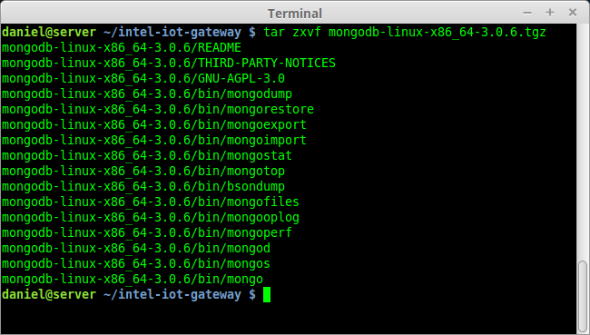

Edge Device Management
Part 1: Provisioning Sensors and Actuators on a Managed Iot Network
Objective
By the end of this module, you should be able to:
- Setup a MongoDB database.
- Write MongooseJS schema and data models.
- Write Edge Device Daemon that listens for new network sensors and stores their data in the MongoDB on your Intel Iot Gateway.
- Provision a sensor to the Iot Gateway Edge Network.
- Provision an actuator to the Iot Gateway Edge Network.
- Write a JavaScript application that listens for Restful HTTP requests and activates an edge network event.
Solutions to the Exercises
The solutions will be made available in the labs as we move through the exercises. The instructor will announce when each solution becomes available.
Set up the Proxy for the Intel Network
On the Gateway device type the following:
Be sure to use two characters for the >> operator.
echo "export http_proxy=’http://10.7.211.16:912/’" >> /etc/profile
echo "export https_proxy=’http://10.7.211.16:912/’" >> /etc/profile
npm config set proxy http://10.7.211.16:912/
npm config set https-proxy http:1//0.7.21/1.16:912/
source /etc/profile
Also when you take the gateway back home or to your business be sure to delete the http_proxy from the /etc/profile file.
Setup the Mosquitto MQTT Broker
On the gateway type of the following:
adduser mosquitto
mosquitto
This will create a user for your Mosquitto and launch the MQTT Broker named mosquitto
Set up MongoDB on the Intel Iot Gateway
-
SSH into your Intel Iot Gateway and login.
If you need a reminder, look at Step 1: Login to your Intel Iot Gateway from the Intro Module.
-
Download the MongoDB software.
$ wget https://fastdl.mongodb.org/linux/mongodb-linux-x86_64-3.0.6.tgz
-
Once downloaded, unarchive the downloaded file.
$ tar zxvf mongodb-linux-x86_64-3.0.6.tgz
-
Add the mongodb binaries to the /usr/bin directory
$ mv ./bin/* /usr/bin/ -
The Intel Iot Gateway is enabled with grsecurity which by default prevents the execution of processes that are not added to a white list.
Add the MongoDM daemon (mongod) to the whitelist type:
$ paxctl -Cm /usr/bin/mongod -
Start the MongoDM daemon using the "mongod" command:
mongod
References
Write Mongoose JS Models to Access MongoDB
As we build our IoT Gateway system, we will need to be able to track sensors, actuators, sensor data, system events (triggers), system errors.
MongooseJS is an Object Data Manager that let’s you build JavaScript objects that can create, read, validate, update and remove documents from a MongoDB.
Read through the documentation on building Mongoose Schemas and Models at http://mongoosejs.com/docs/guide.html then start the exercise.
Be sure that you whitelist the /usr/bin/node executable:
$ paxctl -Cm /usr/bin/nodeAlso create a project directory.
$ mkdir project-
Install MongooseJS
$ npm install mongoose -
Define a sensor schema with the following data types:
id : String
name : String
description : String
maxfrequency : Number
active : Boolean
ioType String.
-
Define an actuator schema with the following data types:
id : String
name : String
description : String
maxfrequency : Number
active : Boolean
ioType String.
-
Define sensor data schema with the following data types:
sensor_id: String
value: Number
timestamp: Date
-
Define a Trigger schema with the following data types:
id: String. Holds a unique value for the iot network event
name: String. A name for the iot network event
sensor_id: String. A reference to the sensor that will trigger this event
actuator_id: String. A reference to the actuator that will be activated
condition: String. A JavaScript function that returns true or false
triggerFunc: String. A JavaScript function that is executed when the condition is true.
active: Boolean. If true this Iot Network Event can be triggered, otherwise it is inactive
-
Define a schema for errors with the following data types:
type: String
message: String
timestamp: Date
Write Edge Device Daemon
The purpose of this daemon is to track edge network sensors and to record their data into the MongoDB database that you setup.
-
Write a NodeJS application that listens to two topics: "announcements" and “sensors/+/data”.
The first topic will be published on if a new network sensor come online in the edge network.
Notice the second topic has a “+” in it. This is a wildcard character, and it means that any alphanumeric sequence will match it. For the purposes of the IoT network we are designing, a sensor’s unique id should go here. So that if we want to listen to the data from a particular sensor we can listen to a topic like “sensors/temperature/data” or if we want to listen to the data from all sensors we can listen to “sensors/+/data”.
-
When a new sensor or a new sensor value arrives, write it to the database.
Provision an Edge Sensor to the Network and Publish Sensor Data using MQTT
In this exercise, you will write an MQTT server that publishes temperature data to the edge network.
Here are the steps in this exercise:
Add the MQTT NPM package to the dependencies section of the package.json file.
Import the MQTT and the jsupm_grove packages with the require statement.
Initialize the temperature sensor.
Connect to the Mosquitto database.
Publish a sensor announcement.
Write an event handler that responses to the MQTT connect event.
Inside the event, write a setInterval function that publishes the sensor data.
References
Controlling Edge Network Devices Actuators with Restful HTTP
In this exercise, you will create a restful HTTP API to control an actuator deployed on an edge network.
Here are the steps in this exercise:
List the actions that the actuator can performs and create a Restful API that calls each action.
Import the Express Node module, and setup the server to respond to the Restful API.
Create API Endpoints for server that correspond to the API you defined for the actuator.
Implement each API endpoint.